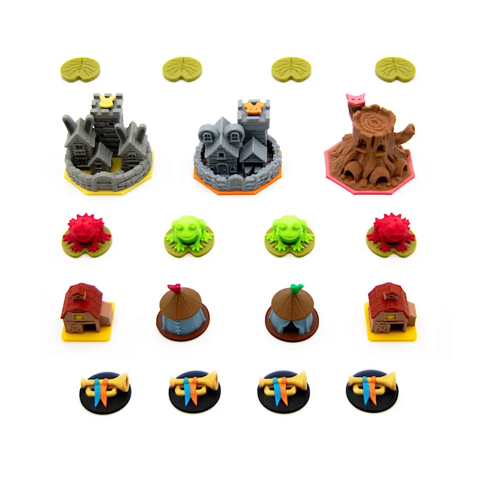
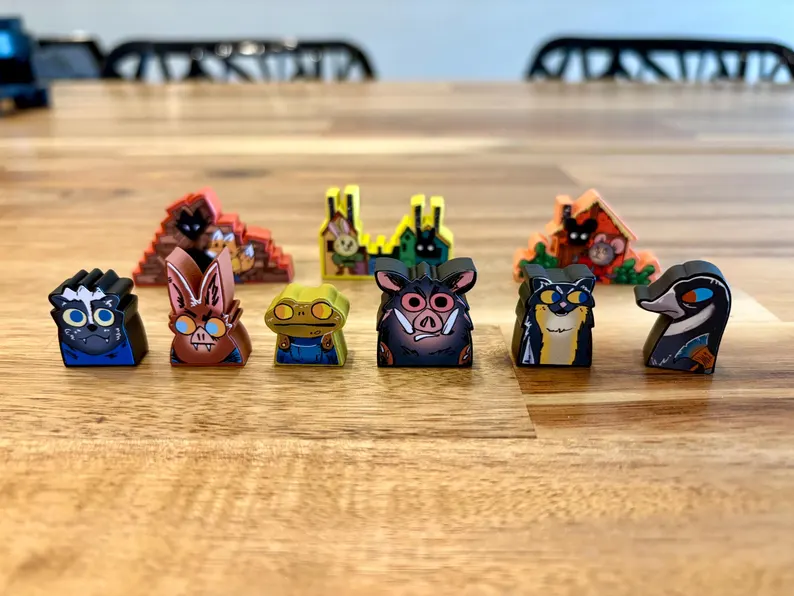
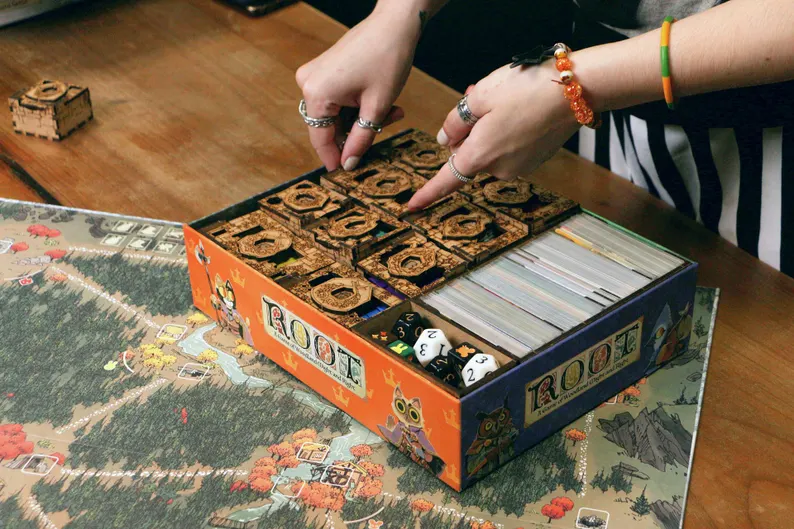

Tokens personalizados
Algumas referências encontradas no Etsy para melhorar a organização e a aparência dos componentes.




Algumas referências encontradas no Etsy para melhorar a organização e a aparência dos componentes.


